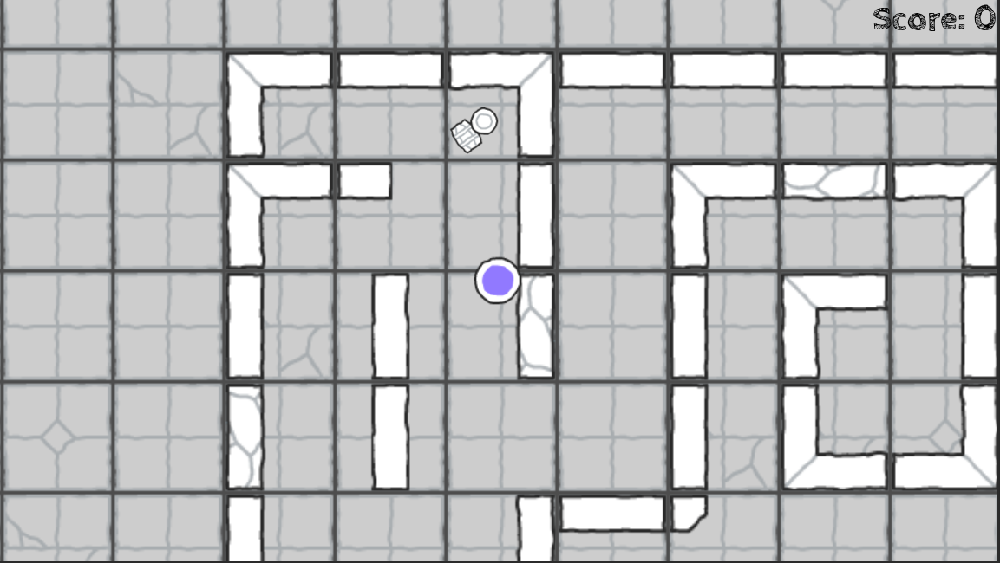

Section 8 of 8
Unit Complete →
Section 8: Multiple Levels & the Global Autoload
Chain multiple levels together with a global script that tracks progress and handles level transitions.
Section Progress: 0%
1
Creating the Folders
- In the FileSystem dock, right-click on res://
- Select "New Folder" and name it "levels"
- Create a second folder named "scripts"
Moving Your Level
- Drag Level1.tscn into the levels folder
- Rename it to "level1.tscn" (lowercase, to match the pattern below)
- Right-click level1.tscn and select "Duplicate"
- Rename the duplicate to "level2.tscn"
- Open level2.tscn and redesign the maze to make it harder
💡 Pro Tip: Duplicating a level keeps your walls, player, and exit setup intact. You only redesign the maze layout, which is much faster than starting over.
2
Writing the Global Script
- Right-click the scripts folder and select "New Script"
- Name it "global.gd"
- Add the following code:
extends Node
var current_level = 1
func next_level():
current_level += 1
var next_path = "res://levels/level" + str(current_level) + ".tscn"
if ResourceLoader.exists(next_path):
get_tree().change_scene_to_file(next_path)
else:
get_tree().change_scene_to_file("res://Win.tscn")
func reset_game():
current_level = 1
get_tree().change_scene_to_file("res://Start.tscn")
💡 Pro Tip: The script builds the next level's file path from a pattern: "level" + number + ".tscn". Your level files must follow that naming pattern (level1.tscn, level2.tscn, level3.tscn) for the system to find them.
3
Setting Up the Autoload
- Go to Project → Project Settings
- Click the "Globals" tab, then the "Autoload" sub-tab
- Click the folder icon and select "res://scripts/global.gd"
- Set the Node Name to "Global"
- Click "Add", then "Close"
💡 Pro Tip: An autoloaded script runs for the entire game and is never unloaded when scenes change. That is why it can remember the current level. You can now call Global.next_level() from any script in your project.
4
Modifying exit.gd
- Open exit.gd (the script you made in Section 7)
- Change the _on_body_entered function to call the global script instead of loading the win scene directly:
func _on_body_entered(body):
# Check if the entering body is the player
if body.name == "Player":
# Advance to the next level (or the win screen)
Global.next_level()5
Resetting on Replay
- Open Win.tscn and find the script connected to the "Play Again" button
- Change the button's function to reset the level counter before returning to the start screen:
func _on_play_again_pressed():
Global.reset_game()
💡 Pro Tip: Without reset_game(), the level counter stays at the last level played. Replaying the game would then try to load a level that does not exist. Always reset your tracking variables when the game restarts.
6
Playing Through Every Level
- Press F5 to run the game from the start screen
- Play through level 1 and reach the exit
- You should land in level 2, not the win screen
- Finish level 2 to reach the win screen
- Click "Play Again" and confirm you return to the start screen
- Play again and confirm you start back at level 1, not level 2
💡 When it breaks: If the game jumps straight to the win screen after level 1, check that level2.tscn exists in the levels folder and follows the naming pattern exactly.
🎉 Unit 1 Complete! You've built a complete game with:
- ✅ A player character with smooth top-down movement
- ✅ Tile-based maze levels with collision
- ✅ A reusable TileSet for level design
- ✅ A Start scene with menu buttons
- ✅ An exit trigger that detects player completion
- ✅ A Win scene with Play Again functionality
- ✅ A complete game loop from Start → Level → Win → Play Again
Video Tutorials
━━━━━━━━━━━━━━━━━━━━